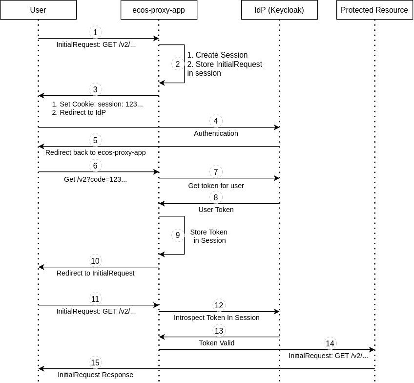
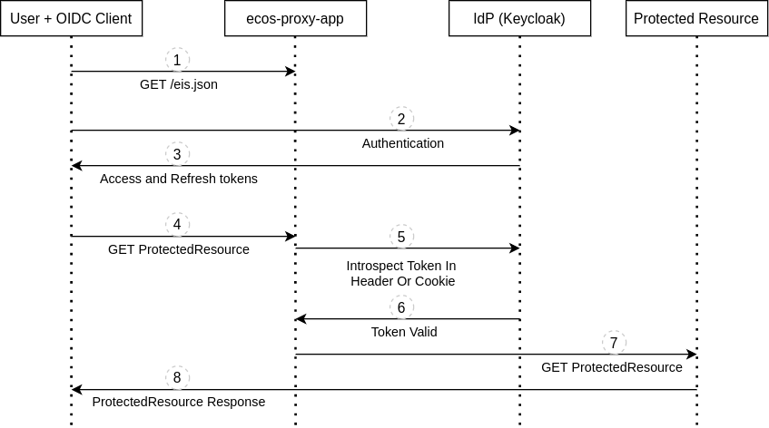

Аутентификация
Терминология
IdP (Identity provider) - Провайдер аутентификации, который отвечает за аутентификацию пользователей и внешних систем. В Citeck ECOS в качестве протокола для аутентификации используется OpenID Connect. В качестве стандартного IdP используется Keycloak.
OIDC (OpenID Connect) - Открытый стандарт децентрализованной системы аутентификации.
Access Token - Токен доступа. Используется при доступе к защищенным ресурсам. Как правило имеет малое время жизни (порядка пяти минут) и регулярно обновляется с помощью токена обновления (Refresh Token).
Refresh Token - Токен обновления. Используется OIDC клиентом при обращении к IdP для получения нового токена доступа (Access Token).
IdP Realm - это независимое пространство со своими настройками аутентификации для конкретного сервера. Если проводить аналогию с базами данных, то IdP - это СУБД, а реалм - это БД.
Общая информация
В Citeck ECOS поддерживается два способа аутентификации:
Аутентификация через встроенный OIDC клиент
Аутентификация через внешний OIDC клиент
Аутентификация через встроенный OIDC клиент
Логика аутентификации находится в приложении ecos-proxy-app и реализована через модуль lua-resty-openidc
Настройка модуля выполняется через переменные среды контейнера ecos-proxy-app:
Переменная |
Значение |
Описание |
EIS_TARGET |
Строка вида
host[:port] |
Внутренний хост IdP. Используется, чтобы определить куда нужно направить запросы
с
http://{{SERVER_HOST}}/ecos-idp/auth/. Этот параметр нужен только тогда, когда IdPразворачивается в комплекте с ECOS. Для использования внешнего IdP эту настройку
следует опустить.
|
ENABLE_OIDC_FULL_ACCESS |
true или false |
Включить интеграцию с IdP. Как правило здесь всегда должно стоять
true. |
CLIENT_ID |
Строка
|
Идентификатор клиента для работы с IdP. По умолчанию
nginx. |
CLIENT_SECRET |
Строка
|
Секрет для аутентификации OIDC клиента (ecos-proxy-app) на IdP.
|
EIS_SCHEME |
http или https |
Схема для запросов от OIDC клиента (ecos-proxy-app) к IdP. По умолчанию
https. |
EIS_ID |
Строка вида
host[:port] |
Хост для доступа к IdP от OIDC клиента и от браузера пользователя.
|
EIS_LOCATION |
Строка
|
Локация, по которой доступен IdP на хосте EIS_ID. По умолчанию
auth |
REALM_ID |
Строка
|
Идентификатор реалма, в рамках которого выполняется интеграция с IdP.
|
REDIRECT_LOGOUT_URI |
URI строка
|
URI для переадресации после успешного входа, который произошел после логаута.
|
ENABLE_LOGGING |
debug или warn |
Включение дебага для ecos-proxy-app. При значении
debug в логах пишутся все шагивзаимодействия с IdP. Если этот параметр не задан, то все логи отправляются в
/dev/null |
При включенной интеграции с IdP ecos-proxy-app отправляет GET запрос за информацией для работы протокола OIDC по адресу:
EIS_SCHEME://EIS_ID/EIS_LOCATION/realms/REALM_ID/.well-known/openid-configuration
В ответе IdP возвращает параметры, которые нужны нашему клиенту для работы по протоколу OIDC. Например:
Адреса для получения и обновления токенов;
Адрес для проверки токена пользователя;
Адрес для логаута;
Поддерживаемые алгоритмы шифрования;
и т.д.
Алгоритм аутентификация через встроенный OIDC клиент
{kind=link}
Приходит запрос от пользователя на защищенный ресурс;
ecos-proxy-app создает сессию для пользователя и сохраняет там исходный запрос из п.1;
ecos-proxy-app отправляет ответ пользователю с установкой куки с идентификатором сессии и редиректом на IdP для входа;
Пользователь проходит аутентификацию на IdP через ввод логина/пароля или используя альтернативные способы для входа;
IdP после успешного входа редиректит пользователя на URI, который был указан в параметре redirect_uri при редиректе на п.3 и при этом добавляет в этот URI параметр с кодом, по которому ecos-proxy-app сможет запросить токены пользователя у IdP;
Пользователь открывает URI, который является колбэком для аутентификации (по дефолту в ECOS это
/v2) и попадает на ecos-proxy-app;ecos-proxy-app получает код от пользователя и отправляет с ним запрос на IdP для получения Access и Refresh токенов для пользователя;
ecos-proxy-app получает токены пользователя от IdP;
ecos-proxy-app сохраняет у себя токены пользователя в его сессии;
ecos-proxy-app отправляет пользователю редирект на исходный URI, который он запрашивал в п.1;
Пользователь отправляет запрос на исходный URI из п.1;
ecos-proxy-app достает Access токен пользователя из сессии и отправляет запрос в IdP на проверку валидности;
IdP отвечает ecos-proxy-app, что токен валидный;
ecos-proxy-app предоставляет доступ пользователю к защищенному ресурсу и при этом добавляет в запрос хидер
X-ECOS-User, который равен имени пользователя;Пользователь получает ожидаемый ответ от защищенного ресурса.
Во всем процессе аутентификации от пользователя требуется только действия на шаге 4 (аутентификация на IdP). Все остальные пункты проходят прозрачно и незаметно для пользователя.
Шаги 11-15 выполняются при каждом последующем запросе с поправкой на то, что результат проверки токена на валидность кэшируется. Время хранения кэша зависит от настоек IdP и как правило равно времени жизни токена доступа (Access Token).
Аутентификация через внешний OIDC клиент
{kind=link}
Клиент получает базовую конфигурацию для работы с IdP (realmId, eisId, logoutUrl) отправив GET запрос на
{{SERVER_HOST}}/eis.json;Клиент предлагает пользователю пройти аутентификацию на IdP;
Клиент получает Access и Refresh токены от IdP;
Клиент отправляет запрос на защищенный ресурс с Access Token;
ecos-proxy-app валидирует Access токен отправляя запрос на IdP;
IdP отвечает, что токен валидный;
ecos-proxy-app отправляет запрос на защищенный ресурс, который нужен клиенту добавив в запрос хидер
X-ECOS-Userс именем пользователя;Клиент получает ответ от защищенного ресурса.
Во всем процессе аутентификации от пользователя требуется только действия на шаге 2 (аутентификация на IdP). Все остальные пункты проходят прозрачно и незаметно для пользователя.
Клиент может отправлять токен при запросах в следующем виде:
В хидере Authentication в формате
Bearer {{TOKEN}}.В куке PA
Настройки /eis.json заполняются значениями из переменных среды ecos-proxy-app - REALM_ID и EIS_ID
Настройка времени жизни сессий на Keycloak
Настройки на уровне реалма (действуют для всех клиентов в этом реалме по умолчанию):
Realm Settings -> Tokens
Настройки на уровне клиента (переопределяют настройки реалма):
Clients -> CLIENT_ID -> Settings -> Advanced Settings
Параметр |
Описание |
SSO Session Idle |
Время жизни сессии пользователя при неактивности. Если от пользователя
нет никакой активности в течении этого времени, то сессия прерывается.
|
SSO Session Max |
Максимальное время жизни сессии пользователя. Сессия прерывается если
с момента аутентификации прошло указанное время вне зависимости от активности пользователя.
|
Client Session Idle |
Время жизни сессии OIDC клиента при неактивности. Если от OIDC клиента
нет никакой активности в течении этого времени, то сессия клиента прерывается.
Если значение не задано, то по умолчанию берется значение SSO Session Idle.
|
Client Session Max |
Максимальное время жизни сессии клиента. Сессия прерывается если
с момента аутентификации клиента прошло указанное время вне зависимости от активности клиента.
Если значение не задано, то по умолчанию берется значение SSO Session Max.
|
Access Token Lifespan |
Время жизни Access токена. Это время жизни должно быть
небольшим (по умолчанию 5 минут) из соображений безопасности.
Токены доступа меняются автоматически и прозрачно для пользователя.
|
Примечания:
Если сессия пользователя прерывается, то выданные в этой сессии Access и Refresh токены отзываются.
Если сессия OIDC клиента прерывается, то выданные в этой сессии Access и Refresh токены для всех пользователей отзываются.
Если пользователь работает с сервером через встроенный OIDC клиент в ecos-proxy-app, то следует учитывать, что OIDC клиент кэширует результат запросов к IdP и не каждый запрос приводит к обновлению условного «таймера активности» на IdP. Активность обновляется как минимум при обновлении Access Token’а.
Из особенности работы OIDC клиента с кэшем так же следует, что если мы прерываем сессию в IdP, то это не гарантирует, что пользователь сразу же потеряет доступ к серверу. Пользователь сможет отправлять запросы и получать данные от сервера до тех пор пока действует его Access Token.
Touch запросы
Для того, чтобы сессия пользователя неожиданно не прерывалась без явных действий пользователя, которые приводят к запросам на сервер, в ecos-ui добавлена логика с периодическй отправкой touch запроса. Задача этого запроса в проходе через механизм проверки токена пользователя и обновления условного таймера неактивности в IdP. Touch запросы отправляются периодически до тех пор пока пользователь что-то делает в системе (двигает мышкой, нажимает клавиши и т.д.).
Тайминги touch запросов для версии ecos-ui 2.9.0+:
Период отправки touch запросов: 30с.
Время неактивности после которого перестают отправляться touch запросы: 1ч.
В журнале конфигурации ECOS можно настроить поведение touch запросов:
Scope: app/gateway
Id: touch
Содержимое настройки:
{
"enabled": Boolean //включить или отключить touch запросы
"uri": String // URI для touch запросов
}
Интеграция с внешними IdP
Для организации аутентификации в Citeck ECOS с использованием IdP отличных от Keycloak или c Keycloak, который не поставляется вместе с Citeck ECOS мы рекомендуем использовать архитектуру
[Citeck ECOS <-> Keycloak] <-> External IdP
Citeck ECOS продолжает использовать свой Keycloak для аутентификации, а внешний IdP прозрачно подключается с использованием обширных возможностей Keycloak по интеграции с внешними IdP. Такая архитектура проверена временем и является оптимальной для использования.